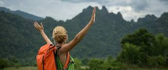

Reducing plastic waste while traveling
Traveling can often lead to an increase in plastic comsumption due to convenience items like water bottles, takeout containers, and plastic bags. However,, with a little planning, you can significantly reduce your plastic footprint while exploring the world. Here are some pratical tips.
- Carry a reusable shopping bag:
- Bring a reuable water bottle:
- Say no to single-use plastics:
- Support Eco-friendly accomdations:
- Recycle properly:
By incorporating these habits into your travel routine, you can enjoy your adventure while also caring for the planet. Every small actions adds up to a significant impact!